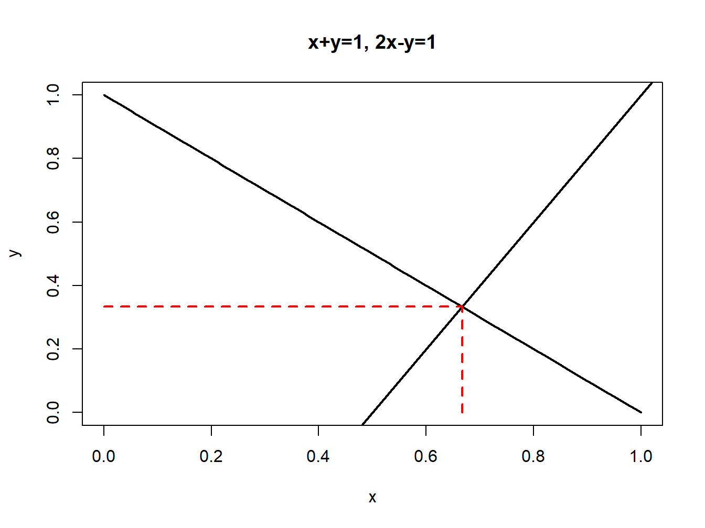

Code
matA = matrix(data=c(1,2,3,4,5,6),nrow=2,ncol=3,byrow=TRUE)
matA
#> [,1] [,2] [,3]
#> [1,] 1 2 3
#> [2,] 4 5 6
class(matA)
#> [1] "matrix" "array"Updated: September 3, 2026
Copyright © Eric Zivot 2026
This chapter reviews some basic matrix algebra concepts that we will use throughout the book. Many of the formulas that involve multiple variables that we derive in the book can be simplified using matrix algebra. This aids in understanding general concepts. For example, portfolio risk and return calculations for portfolios with more than two assets is easy to express using matrix algebra. If returns are jointly normally distributed, then this multivariate normal distribution can be expressed concisely using matrix algebra. The first order conditions involving the portfolio weights for mean-variance optimized portfolios is a system of linear equations that can be set-up and solved using matrix algebra. In addition, R is a matrix programming language. Pretty much anything that you can represent in matrix algebra you can evaluate in R using matrix calculations that have a syntax very much like the matrix algebra representation. Lastly, many R calculations can be efficiently evaluated if they are vectorized - that is, if they operate on vectors of elements instead of looping over individual elements.
This chapter is organized as follows. Section Section 3.1 gives definitions of matrices and vectors and shows how to represent these objects in R. Section Section 3.2 reviews basic matrix operations (addition, subtraction, multiplication), and section Section 3.3 shows how common summation calculations can be represented using matrix notation. Section Section 3.4 covers systems of linear equations and shows how the inverse of a matrix is related to the solutions to a system of linear equations. Section Section 3.5 discusses positive definite matrices and Cholesky decomposition. The use of matrix algebra for representing multivariate probability distributions is presented in section Section 3.6, and portfolio calculations using matrix algebra is presented in section Section 3.7. Section Section 3.8 concludes with a discussion of derivatives of some simple matrix functions.
The R packages used in this chapter are Matrix and mvtnorm. Make sure these packages are downloaded and installed prior to replicating the R examples in this chapter.
Definition 3.1 (Matrix) A matrix is just an array of numbers. The dimension of a matrix is determined by the number of its rows and columns.
For example, a matrix \(\mathbf{A}\) with \(n\) rows and \(m\) columns is illustrated below: \[ \underset{(n\times m)}{\mathbf{A}}=\left[\begin{array}{cccc} a_{11} & a_{12} & \ldots & a_{1m}\\ a_{21} & a_{22} & \ldots & a_{2m}\\ \vdots & \vdots & \ddots & \vdots\\ a_{n1} & a_{n2} & \ldots & a_{nm} \end{array}\right] \] where \(a_{ij}\) denotes the \(i^{th}\) row and \(j^{th}\) column element of \(\mathbf{A}\).
Definition 3.2 (Vector) A vector is simply a matrix with \(1\) column.
For example, \[ \underset{(n\times1)}{\mathbf{x}}=\left[\begin{array}{c} x_{1}\\ x_{2}\\ \vdots\\ x_{n} \end{array}\right] \] is an \(n\times1\) vector with elements \(x_{1},x_{2},\ldots,x_{n}\). Vectors and matrices are often written in bold type (or underlined) to distinguish them from scalars (single elements of vectors or matrices).
Example 3.1 (Matrix creation in R) In R, matrix objects are created using the matrix() function. For example, to create the \(2\times3\) matrix: \[
\underset{(2\times3)}{\mathbf{A}}=\left[\begin{array}{ccc}
1 & 2 & 3\\
4 & 5 & 6
\end{array}\right]
\] use,
matA = matrix(data=c(1,2,3,4,5,6),nrow=2,ncol=3,byrow=TRUE)
matA
#> [,1] [,2] [,3]
#> [1,] 1 2 3
#> [2,] 4 5 6
class(matA)
#> [1] "matrix" "array"The optional argument byrow=TRUE fills the matrix row-by-row.1 The default is byrow=FALSE which fills the matrix column-by-column:
matrix(data=c(1,2,3,4,5,6),nrow=2,ncol=3)
#> [,1] [,2] [,3]
#> [1,] 1 3 5
#> [2,] 2 4 6Matrix objects (i.e., objects of class "matrix") have row and column dimension attributes which can be examined with the dim() function:
dim(matA)
#> [1] 2 3The rows and columns can be given names using:
dimnames(matA) = list(c("row1","row2"),c("col1","col2","col3"))
matA
#> col1 col2 col3
#> row1 1 2 3
#> row2 4 5 6or,
colnames(matA) = c("col1", "col2", "col3")
rownames(matA) = c("row1", "row2")
matA
#> col1 col2 col3
#> row1 1 2 3
#> row2 4 5 6The elements of a matrix can be extracted or subsetted as follows:
matA[1, 2]
#> [1] 2
matA["row1", "col1"]
#> [1] 1
matA[1, ]
#> col1 col2 col3
#> 1 2 3
matA[, 2]
#> row1 row2
#> 2 5To preserve the dimension attributes when subsetting, use the drop=FALSE option:
matA[1, , drop=FALSE]
#> col1 col2 col3
#> row1 1 2 3
matA[, 2, drop=FALSE]
#> col2
#> row1 2
#> row2 5\(\blacksquare\)
Example 3.2 (Creating vectors in R) Vectors can be created in R using a variety of methods. The easiest way is to use the combine function c():
xvec = c(1,2,3)
xvec
#> [1] 1 2 3
xvec = 1:3
xvec
#> [1] 1 2 3
xvec = seq(from=1,to=3,by=1)
xvec
#> [1] 1 2 3Vectors of numbers in R are of class "numeric" and do not have a dimension attribute:
class(xvec)
#> [1] "numeric"
dim(xvec)
#> NULLThe elements of a vector can be assigned names using the names() function:
names(xvec) = c("x1", "x2", "x3")
xvec
#> x1 x2 x3
#> 1 2 3To force a dimension attribute onto a vector, coerce it to a "matrix" object using as.matrix():
as.matrix(xvec)
#> [,1]
#> x1 1
#> x2 2
#> x3 3\(\blacksquare\)
Definition 3.3 (Transpose) The transpose of an \(n\times m\) matrix \(\mathbf{A}\) is a new matrix with the rows and columns of \(\mathbf{A}\) interchanged, and is denoted \(\mathbf{A}^{\prime}\) or \(\mathbf{A}^{\intercal}\).
For example, \[ \begin{aligned} \underset{(2\times3)}{\mathbf{A}} & =\left[\begin{array}{ccc} 1 & 2 & 3\\ 4 & 5 & 6 \end{array}\right],~\underset{(3\times2)}{\mathbf{A}^{\prime}}=\left[\begin{array}{cc} 1 & 4\\ 2 & 5\\ 3 & 6 \end{array}\right]\\ \underset{(3\times1)}{\mathbf{x}} & =\left[\begin{array}{c} 1\\ 2\\ 3 \end{array}\right],~\underset{(1\times3)}{\mathbf{x}^{\prime}}=\left[\begin{array}{ccc} 1 & 2 & 3\end{array}\right]. \end{aligned} \]
Definition 3.4 (Symmetric matrix) A symmetric matrix \(\mathbf{A}\) is such that \(\mathbf{A}=\mathbf{A}^{\prime}\).
Obviously, symmetry can only occur if \(\mathbf{A}\) is a square matrix; i.e., the number of rows of \(\mathbf{A}\) is equal to the number of columns. For example, consider the \(2\times2\) matrix: \[ \mathbf{A}=\left[\begin{array}{cc} 1 & 2\\ 2 & 1 \end{array}\right]. \] Then, \[ \mathbf{A}^{\prime}=\mathbf{A}=\left[\begin{array}{cc} 1 & 2\\ 2 & 1 \end{array}\right]. \]
Example 3.3 (Transpose of a matrix in R) To take the transpose of a matrix or vector, use the t() function:
matA = matrix(data=c(1,2,3,4,5,6),nrow=2,ncol=3,byrow=TRUE)
matA
#> [,1] [,2] [,3]
#> [1,] 1 2 3
#> [2,] 4 5 6
t(matA)
#> [,1] [,2]
#> [1,] 1 4
#> [2,] 2 5
#> [3,] 3 6
xvec = c(1,2,3)
t(xvec)
#> [,1] [,2] [,3]
#> [1,] 1 2 3Notice that, when applied to a "numeric" vector with \(n\) elements, the t() function returns a "matrix" object with dimension \(1\times n\).
\(\blacksquare\)
In this section we review the basic matrix operations of addition, subtraction, scalar multiplication and multiplication.
Definition 3.5 (Matrix addition) Matrix addition and subtraction are element by element operations and only apply to matrices of the same dimension.
For example, let, \[ \mathbf{A}=\left[\begin{array}{cc} 4 & 9\\ 2 & 1 \end{array}\right],~\mathbf{B}=\left[\begin{array}{cc} 2 & 0\\ 0 & 7 \end{array}\right]. \] Then, \[ \begin{aligned} \mathbf{A+B} & =\left[\begin{array}{cc} 4 & 9\\ 2 & 1 \end{array}\right]+\left[\begin{array}{cc} 2 & 0\\ 0 & 7 \end{array}\right]=\left[\begin{array}{cc} 4+2 & 9+0\\ 2+0 & 1+7 \end{array}\right]=\left[\begin{array}{cc} 6 & 9\\ 2 & 8 \end{array}\right],\\ \mathbf{A-B} & =\left[\begin{array}{cc} 4 & 9\\ 2 & 1 \end{array}\right]-\left[\begin{array}{cc} 2 & 0\\ 0 & 7 \end{array}\right]=\left[\begin{array}{cc} 4-2 & 9-0\\ 2-0 & 1-7 \end{array}\right]=\left[\begin{array}{cc} 2 & 9\\ 2 & -6 \end{array}\right]. \end{aligned} \]
Example 3.4 (Matrix addition and subtraction in R) Matrix addition and subtraction is straightforward in R:
matA = matrix(c(4,9,2,1),2,2,byrow=TRUE)
matB = matrix(c(2,0,0,7),2,2,byrow=TRUE)
matA
#> [,1] [,2]
#> [1,] 4 9
#> [2,] 2 1
matB
#> [,1] [,2]
#> [1,] 2 0
#> [2,] 0 7
# matrix addition
matC = matA + matB
matC
#> [,1] [,2]
#> [1,] 6 9
#> [2,] 2 8
# matrix subtraction
matD = matA - matB
matD
#> [,1] [,2]
#> [1,] 2 9
#> [2,] 2 -6\(\blacksquare\)
Here we refer to the multiplication of a matrix by a scalar number. This is also an element-by-element operation. For example, let \(c=2\) and, \[ \mathbf{A}=\left[\begin{array}{cc} 3 & -1\\ 0 & 5 \end{array}\right]. \] Then, \[ c\cdot\mathbf{A}=\left[\begin{array}{cc} 2\cdot3 & 2\cdot(-1)\\ 2\cdot(0) & 2\cdot5 \end{array}\right]=\left[\begin{array}{cc} 6 & -2\\ 0 & 10 \end{array}\right]. \]
Example 3.5 (Scalar multiplication in R)
matA = matrix(c(3,-1,0,5),2,2,byrow=TRUE)
matC = 2*matA
matC
#> [,1] [,2]
#> [1,] 6 -2
#> [2,] 0 10\(\blacksquare\)
Matrix multiplication only applies to conformable matrices.
Definition 3.6 (Conformable matrices) \(\mathbf{A}\) and \(\mathbf{B}\) are conformable matrices if the number of columns in \(\mathbf{A}\) is equal to the number of rows in \(\mathbf{B}.\)
For example, if \(\mathbf{A}\) is \(n\times m\) and \(\mathbf{B}\) is \(m\times p\) then \(\mathbf{A}\) and \(\mathbf{B}\) are conformable and the matrix product of \(\mathbf{A}\) and \(\mathbf{B}\) has dimension \(n\times p\). The mechanics of matrix multiplication is best explained by example. Let, \[ \underset{(2\times2)}{\mathbf{A}}=\left[\begin{array}{cc} 1 & 2\\ 3 & 4 \end{array}\right]\textrm{ and}\underset{(2\times3)}{\mathbf{B}}=\left[\begin{array}{ccc} 1 & 2 & 1\\ 3 & 4 & 2 \end{array}\right]. \] Then, \[ \begin{aligned} \underset{(2\times2)}{\mathbf{A}}\cdot\underset{(2\times3)}{\mathbf{B}} & =\left[\begin{array}{cc} 1 & 2\\ 3 & 4 \end{array}\right]\cdot\left[\begin{array}{ccc} 1 & 2 & 1\\ 3 & 4 & 2 \end{array}\right]\\ & =\left[\begin{array}{ccc} 1\cdot1+2\cdot3 & 1\cdot2+2\cdot4 & 1\cdot1+2\cdot2\\ 3\cdot1+4\cdot3 & 3\cdot2+4\cdot4 & 3\cdot1+4\cdot2 \end{array}\right]\\ & =\left[\begin{array}{ccc} 7 & 10 & 5\\ 15 & 22 & 11 \end{array}\right]=\underset{(2\times3)}{\mathbf{C}} \end{aligned} \] The resulting matrix \(\mathbf{C}\) has 2 rows and 3 columns. The \((1,1)\) element of \(\mathbf{C}\) is the dot product of the first row of \(\mathbf{A}\) with the first column of \(\mathbf{B}\): \[ \left(\begin{array}{cc} 1 & 2\end{array}\right)\cdot\left(\begin{array}{c} 1\\ 3 \end{array}\right)=1\cdot1+2\cdot3=7. \] The \((1,2)\) element of \(\mathbf{C}\) is the dot product of the first row of \(\mathbf{A}\) with the second column of \(\mathbf{B}\): \[ \left(\begin{array}{cc} 1 & 2\end{array}\right)\cdot\left(\begin{array}{c} 2\\ 4 \end{array}\right)=1\cdot2+2\cdot4=10. \] In general, the \((i,j)\) element of \(\mathbf{C}\) is the dot product of the ith row of \(\mathbf{A}\) with the jth column of \(\mathbf{B}\). If \(\mathbf{A}\) is \(n\times m\) and \(\mathbf{B}\) is \(m\times p\) then \(\mathbf{C=A\cdot B}\) is \(n\times p\).
As another example, let, \[ \underset{(2\times2)}{\mathbf{A}}=\left[\begin{array}{cc} 1 & 2\\ 3 & 4 \end{array}\right]\textrm{ and}\underset{(2\times1)}{\mathbf{B}}=\left[\begin{array}{c} 2\\ 6 \end{array}\right]. \] Then, \[ \begin{aligned} \underset{(2\times2)}{\mathbf{A}}\cdot\underset{(2\times1)}{\mathbf{B}} & =\left[\begin{array}{cc} 1 & 2\\ 3 & 4 \end{array}\right]\cdot\left[\begin{array}{c} 2\\ 6 \end{array}\right]\\ & =\left[\begin{array}{c} 1\cdot2+2\cdot6\\ 3\cdot2+4\cdot6 \end{array}\right]\\ & =\left[\begin{array}{c} 14\\ 30 \end{array}\right]. \end{aligned} \] As a final example, let, \[ \mathbf{x}=\left[\begin{array}{c} 1\\ 2\\ 3 \end{array}\right],~\mathbf{y}=\left[\begin{array}{c} 4\\ 5\\ 6 \end{array}\right]. \] Then \[ \mathbf{x}^{\prime}\mathbf{y}=\left[\begin{array}{ccc} 1 & 2 & 3\end{array}\right]\cdot\left[\begin{array}{c} 4\\ 5\\ 6 \end{array}\right]=1\cdot4+2\cdot5+3\cdot6=32 \]
Example 3.6 (Matrix multiplication in R) In R, matrix multiplication is performed with the % * % operator. For example:
matA = matrix(1:4,2,2,byrow=TRUE)
matB = matrix(c(1,2,1,3,4,2),2,3,byrow=TRUE)
matA
#> [,1] [,2]
#> [1,] 1 2
#> [2,] 3 4
matB
#> [,1] [,2] [,3]
#> [1,] 1 2 1
#> [2,] 3 4 2
dim(matA)
#> [1] 2 2
dim(matB)
#> [1] 2 3
matC = matA%*%matB
matC
#> [,1] [,2] [,3]
#> [1,] 7 10 5
#> [2,] 15 22 11The next example shows that matrix multiplication in R also works on numeric vectors:
matA = matrix(c(1,2,3,4), 2, 2, byrow=TRUE)
vecB = c(2,6)
matA%*%vecB
#> [,1]
#> [1,] 14
#> [2,] 30
vecX = c(1,2,3)
vecY = c(4,5,6)
t(vecX)%*%vecY
#> [,1]
#> [1,] 32
crossprod(vecX, vecY)
#> [,1]
#> [1,] 32\(\blacksquare\)
Matrix multiplication satisfies the distributive property: Let \(\mathbf{A},\,\mathbf{B}\,\) and \(\mathbf{C}\) be conformable matrices. Then \[ \mathbf{A}(\mathbf{B}+\mathbf{C})=\mathbf{AB}+\mathbf{AC}. \tag{3.1}\] Also, the transpose of the product of two matrices is the product of the transposes in opposite order: \[ (\mathbf{AB})^{\prime}=\mathbf{B}^{\prime}\mathbf{A}^{\prime}. \tag{3.2}\]
The identity matrix plays a similar role as the number \(1.\) Multiplying any number by \(1\) gives back that number. In matrix algebra, pre-multiplying or post-multiplying a matrix \(\mathbf{A}\) by a conformable identity matrix \(\mathbf{I}\) gives back the matrix \(\mathbf{A}\). To illustrate, let \[ \mathbf{I}_{2}=\left[\begin{array}{cc} 1 & 0\\ 0 & 1 \end{array}\right] \] denote the 2-dimensional identity matrix and let \[ \mathbf{A}=\left[\begin{array}{cc} a_{11} & a_{12}\\ a_{21} & a_{22} \end{array}\right] \] denote an arbitrary \(2\times2\) matrix. Then, \[ \begin{aligned} \mathbf{I}_{2}\mathbf{\cdot A} & =\left[\begin{array}{cc} 1 & 0\\ 0 & 1 \end{array}\right]\cdot\left[\begin{array}{cc} a_{11} & a_{12}\\ a_{21} & a_{22} \end{array}\right]\\ & =\left[\begin{array}{cc} a_{11} & a_{12}\\ a_{21} & a_{22} \end{array}\right]=\mathbf{A}, \end{aligned} \] and, \[ \begin{aligned} \mathbf{A\cdot I}_{2} & =\left[\begin{array}{cc} a_{11} & a_{12}\\ a_{21} & a_{22} \end{array}\right]\cdot\left[\begin{array}{cc} 1 & 0\\ 0 & 1 \end{array}\right]\\ & =\left[\begin{array}{cc} a_{11} & a_{12}\\ a_{21} & a_{22} \end{array}\right]=\mathbf{A}. \end{aligned} \]
Example 3.7 (The identity matrix in R) Use the diag() function to create an identity matrix:
matI = diag(2)
matI
#> [,1] [,2]
#> [1,] 1 0
#> [2,] 0 1
matA = matrix(c(1,2,3,4), 2, 2, byrow=TRUE)
matI%*%matA
#> [,1] [,2]
#> [1,] 1 2
#> [2,] 3 4
matA%*%matI
#> [,1] [,2]
#> [1,] 1 2
#> [2,] 3 4\(\blacksquare\)
Consider an \(n\times n\) matrix \(\mathbf{A}\) \[ \mathbf{A}=\left[\begin{array}{ccccc} d_{1} & u_{12} & u_{13} & \cdots & u_{1n}\\ l_{21} & d_{2} & u_{23} & \cdots & u_{2n}\\ l_{31} & l_{32} & d_{3} & \cdots & u_{3n}\\ \vdots & \vdots & \vdots & \ddots & \vdots\\ l_{n1} & l_{n2} & l_{n3} & \cdots & d_{n} \end{array}\right]. \] The main diagonal consists of the \(n\) elements \(\{d_{1},d_{2}\ldots d_{n}\}\). The lower triangle consists of the \(n(n-1)/2\) elements \(\{l_{21},l_{31},l_{32},\ldots,l_{n(n-1)}\}\) below the main diagonal, and the upper triangle consists of the \(n(n-1)/2\) elements \(\{u_{12},u_{13},u_{23},\ldots,u_{(n-1)n}\}\) above the main diagonal.
An \(n-\)dimensional diagonal matrix \(\mathbf{D}\) is an \(n\times n\) square matrix with an \(n\times1\) vector \(\mathbf{d}=(d_{1},\ldots,d_{n})^{\prime}\) along the main diagonal and zeros elsewhere: \[ \mathbf{D}= \mathrm{diag}(\mathbf{d}) = \left[\begin{array}{ccccc} d_{1} & 0 & 0 & \cdots & 0\\ 0 & d_{2} & 0 & \cdots & 0\\ 0 & 0 & d_{3} & \cdots & 0\\ \vdots & \vdots & \vdots & \ddots & \vdots\\ 0 & 0 & 0 & \cdots & d_{n} \end{array}\right]. \] An \(n\times n\) lower triangular matrix \(\mathbf{L}\) has all values above the main diagonal equal to zero: \[ \mathbf{L}=\left[\begin{array}{ccccc} d_{1} & 0 & 0 & \cdots & 0\\ l_{21} & d_{2} & 0 & \cdots & 0\\ l_{31} & l_{32} & d_{3} & \cdots & 0\\ \vdots & \vdots & \vdots & \ddots & \vdots\\ l_{n1} & l_{n2} & l_{n3} & \cdots & d_{n} \end{array}\right]. \] An \(n\times n\) upper triangular matrix \(\mathbf{U}\) has all values below the main diagonal equal to zero: \[ \mathbf{U}=\left[\begin{array}{ccccc} d_{1} & u_{12} & u_{13} & \cdots & u_{1n}\\ 0 & d_{2} & u_{23} & \cdots & u_{2n}\\ 0 & 0 & d_{3} & \cdots & u_{3n}\\ \vdots & \vdots & \vdots & \ddots & \vdots\\ 0 & 0 & 0 & \cdots & d_{n} \end{array}\right]. \]
Example 3.8 (Creating a diagonal matrix in R) Diagonal matrices can be created with the diag() function. To create a \(3\times3\) diagonal matrix with \(\mbox{d}=(1,2,3)\) along the main diagonal, use
matD = diag(1:3)
matD
#> [,1] [,2] [,3]
#> [1,] 1 0 0
#> [2,] 0 2 0
#> [3,] 0 0 3\(\blacksquare\)
Example 3.9 (Extracting lower and upper triangular elements of a square matrix) The R functions lower.tri() and upper.tri() can be used to extract the lower and upper triangular parts of a square matrix:
matA = matrix(c(1,2,3,4,5,6,7,8,9), 3, 3)
matA
#> [,1] [,2] [,3]
#> [1,] 1 4 7
#> [2,] 2 5 8
#> [3,] 3 6 9
lower.tri(matA)
#> [,1] [,2] [,3]
#> [1,] FALSE FALSE FALSE
#> [2,] TRUE FALSE FALSE
#> [3,] TRUE TRUE FALSE
upper.tri(matA)
#> [,1] [,2] [,3]
#> [1,] FALSE TRUE TRUE
#> [2,] FALSE FALSE TRUE
#> [3,] FALSE FALSE FALSE
matA[lower.tri(matA)]
#> [1] 2 3 6
matA[upper.tri(matA)]
#> [1] 4 7 8\(\blacksquare\)
Consider the sum: \[ \sum_{k=1}^{n}x_{k}=x_{1}+\cdots+x_{n}. \] Let \(\mathbf{x}=(x_{1},\ldots,x_{n})^{\prime}\) be an \(n\times1\) vector and \(\mathbf{1}=(1,\ldots,1)^{\prime}\) be an \(n\times1\) vector of ones. Then, \[ \mathbf{x}^{\prime}\mathbf{1}=\left[\begin{array}{ccc} x_{1} & \ldots & x_{n}\end{array}\right]\cdot\left[\begin{array}{c} 1\\ \vdots\\ 1 \end{array}\right]=x_{1}+\cdots+x_{n}=\sum_{k=1}^{n}x_{k}, \] and, \[ \mathbf{1}^{\prime}\mathbf{x}=\left[\begin{array}{ccc} 1 & \ldots & 1\end{array}\right]\cdot\left[\begin{array}{c} x_{1}\\ \vdots\\ x_{n} \end{array}\right]=x_{1}+\cdots+x_{n}=\sum_{k=1}^{n}x_{k}. \] Next, consider the sum of squared \(x\) values, \[ \sum_{k=1}^{n}x_{k}^{2}=x_{1}^{2}+\cdots+x_{n}^{2}. \] This sum can be conveniently represented as, \[ \mathbf{x}^{\prime}\mathbf{x}=\left[\begin{array}{ccc} x_{1} & \ldots & x_{n}\end{array}\right]\cdot\left[\begin{array}{c} x_{1}\\ \vdots\\ x_{n} \end{array}\right]=x_{1}^{2}+\cdots+x_{n}^{2}=\sum_{k=1}^{n}x_{k}^{2}. \] Last, consider the sum of cross products, \[ \sum_{k=1}^{n}x_{k}y_{k}=x_{1}y_{1}+\cdots x_{n}y_{n}. \] This sum can be compactly represented by, \[ \mathbf{x}^{\prime}\mathbf{y}=\left[\begin{array}{ccc} x_{1} & \ldots & x_{n}:\end{array}\right]\cdot\left[\begin{array}{c} y_{1}\\ \vdots\\ y_{n} \end{array}\right]=x_{1}y_{1}+\cdots x_{n}y_{n}=\sum_{k=1}^{n}x_{k}y_{k}. \] Note that \(\mathbf{x}^{\prime}\mathbf{y=y}^{\prime}\mathbf{x}\).
Example 3.10 (Computing sums in R) In R, summing the elements in a vector can be done using matrix algebra.
# create vector of 1's and a vector of x
onevec = rep(1,3)
onevec
#> [1] 1 1 1
xvec = c(1,2,3)
# sum elements in x
t(xvec)%*%onevec
#> [,1]
#> [1,] 6The functions crossprod() and sum() are generally computationally more efficient:
crossprod(xvec,onevec)
#> [,1]
#> [1,] 6
sum(xvec)
#> [1] 6Sums of squares are best computed using:
crossprod(xvec)
#> [,1]
#> [1,] 14
sum(xvec^2)
#> [1] 14The dot-product two vectors can be conveniently computed using the crossprod() function:
yvec = 4:6
xvec
#> [1] 1 2 3
yvec
#> [1] 4 5 6
crossprod(xvec,yvec)
#> [,1]
#> [1,] 32
crossprod(yvec,xvec)
#> [,1]
#> [1,] 32\(\blacksquare\)
Consider the system of two linear equations: \[ x+y=1, \tag{3.3}\] \[ 2x-y =1. \tag{3.4}\]
As shown in Figure Figure 3.1, equations Equation 3.3 and Equation 3.4 represent two straight lines which intersect at the point \(x=2/3\) and \(y=1/3\). This point of intersection is determined by solving for the values of \(x\) and \(y\) such that \(x+y=2x-y\)2

The two linear equations can be written in matrix form as: \[ \left[\begin{array}{cc} 1 & 1\\ 2 & -1 \end{array}\right]\left[\begin{array}{c} x\\ y \end{array}\right]=\left[\begin{array}{c} 1\\ 1 \end{array}\right], \] or, \[ \mathbf{A\cdot z=b,} \] where, \[ \mathbf{A}=\left[\begin{array}{cc} 1 & 1\\ 2 & -1 \end{array}\right],~\mathbf{z}=\left[\begin{array}{c} x\\ y \end{array}\right]\textrm{ and }\mathbf{b}=\left[\begin{array}{c} 1\\ 1 \end{array}\right]. \]
If there was a \((2\times2)\) matrix \(\mathbf{B},\) with elements \(b_{ij}\), such that \(\mathbf{B\cdot A=I}_{2},\) where \(\mathbf{I}_{2}\) is the \((2\times2)\) identity matrix, then we could solve for the elements in \(\mathbf{z}\) as follows. In the equation \(\mathbf{A\cdot z=b}\), pre-multiply both sides by \(\mathbf{B}\) to give: \[ \begin{aligned} \mathbf{B\cdot A\cdot z} & =\mathbf{B\cdot b}\\ & \Longrightarrow\mathbf{I\cdot z=B\cdot b}\\ & \Longrightarrow\mathbf{z=B\cdot b}, \end{aligned} \] or \[ \left[\begin{array}{c} x\\ y \end{array}\right]=\left[\begin{array}{cc} b_{11} & b_{12}\\ b_{21} & b_{22} \end{array}\right]\left[\begin{array}{c} 1\\ 1 \end{array}\right]=\left[\begin{array}{c} b_{11}\cdot1+b_{12}\cdot1\\ b_{21}\cdot1+b_{22}\cdot1 \end{array}\right]. \] If such a matrix \(\mathbf{B}\) exists it is called the inverse of \(\mathbf{A}\) and is denoted \(\mathbf{A}^{-1}\). Intuitively, the inverse matrix \(\mathbf{A}^{-1}\) plays a similar role as the inverse of a number. Suppose \(a\) is a number; e.g., \(a=2\). Then we know that \((1/a)\cdot a=a^{-1}a=1\). Similarly, in matrix algebra \(\mathbf{A}^{-1}\mathbf{A=I}_{2}\) where \(\mathbf{I}_{2}\) is the identity matrix. Now, consider solving the equation \(a\cdot x=b\). By simple division we have that \(x=(1/a)\cdot b=a^{-1}\cdot b\). Similarly, in matrix algebra, if we want to solve the system of linear equations \(\mathbf{Ax=b}\) we pre-multiply by \(\mathbf{A}^{-1}\) and get the solution \(\mathbf{x=A}^{-1}\mathbf{b}\).
Using \(\mathbf{B=A}^{-1}\), we may express the solution for \(\mathbf{z}\) as: \[ \mathbf{z=A}^{-1}\mathbf{b}. \] As long as we can determine the elements in \(\mathbf{A}^{-1}\) then we can solve for the values of \(x\) and \(y\) in the vector \(\mathbf{z}\). The system of linear equations has a solution as long as the two lines intersect, so we can determine the elements in \(\mathbf{A}^{-1}\) provided the two lines are not parallel. If the two lines are parallel, then one of the equations is a multiple of the other. In this case, we say that \(\mathbf{A}\) is not invertible.
There are general numerical algorithms for finding the elements of \(\mathbf{A}^{-1}\) (e.g., Gaussian elimination) and R has these algorithms available. However, if \(\mathbf{A}\) is a \((2\times2)\) matrix then there is a simple formula for \(\mathbf{A}^{-1}\). Let \(\mathbf{A}\) be a \((2\times2)\) matrix such that: \[ \mathbf{A}=\left[\begin{array}{cc} a_{11} & a_{12}\\ a_{21} & a_{22} \end{array}\right]. \] Then, \[ \mathbf{A}^{-1}=\frac{1}{\det(\mathbf{A})}\left[\begin{array}{cc} a_{22} & -a_{12}\\ -a_{21} & a_{11} \end{array}\right], \tag{3.5}\] where \(\det(\mathbf{A})=a_{11}a_{22}-a_{21}a_{12}\) denotes the determinant of \(\mathbf{A}\) and is assumed to be not equal to zero. By brute force matrix multiplication we can verify this formula: \[ \begin{aligned} \mathbf{A}^{-1}\mathbf{A} & =\frac{1}{a_{11}a_{22}-a_{21}a_{12}}\left[\begin{array}{cc} a_{22} & -a_{12}\\ -a_{21} & a_{11} \end{array}\right]\left[\begin{array}{cc} a_{11} & a_{12}\\ a_{21} & a_{22} \end{array}\right]\\ & =\frac{1}{a_{11}a_{22}-a_{21}a_{12}}\left[\begin{array}{cc} a_{22}a_{11}-a_{12}a_{21} & a_{22}a_{12}-a_{12}a_{22}\\ -a_{21}a_{11}+a_{11}a_{21} & -a_{21}a_{12}+a_{11}a_{22} \end{array}\right]\\ & =\frac{1}{a_{11}a_{22}-a_{21}a_{12}}\left[\begin{array}{cc} a_{22}a_{11}-a_{12}a_{21} & 0\\ 0 & -a_{21}a_{12}+a_{11}a_{22} \end{array}\right]\\ & =\left[\begin{array}{cc} \dfrac{a_{22}a_{11}-a_{12}a_{21}}{a_{11}a_{22}-a_{21}a_{12}} & 0\\ 0 & \dfrac{-a_{21}a_{12}+a_{11}a_{22}}{a_{11}a_{22}-a_{21}a_{12}} \end{array}\right]\\ & =\left[\begin{array}{cc} 1 & 0\\ 0 & 1 \end{array}\right]. \end{aligned} \] Let’s apply the above rule to find the inverse of \(\mathbf{A}\) in our example linear system Equation 3.3 and Equation 3.4: \[ \mathbf{A}^{-1}=\frac{1}{-1-2}\left[\begin{array}{cc} -1 & -1\\ -2 & 1 \end{array}\right]=\left[\begin{array}{cc} \frac{1}{3} & \frac{1}{3}\\ \frac{2}{3} & \frac{-1}{3} \end{array}\right]. \] Notice that, \[ \mathbf{A}^{-1}\mathbf{A}=\left[\begin{array}{cc} \frac{1}{3} & \frac{1}{3}\\ \frac{2}{3} & \frac{-1}{3} \end{array}\right]\left[\begin{array}{cc} 1 & 1\\ 2 & -1 \end{array}\right]=\left[\begin{array}{cc} 1 & 0\\ 0 & 1 \end{array}\right]. \] Our solution for \(\mathbf{z}\) is then, \[ \begin{aligned} \mathbf{z} & =\mathbf{A}^{-1}\mathbf{b}\\ & =\left[\begin{array}{cc} \frac{1}{3} & \frac{1}{3}\\ \frac{2}{3} & \frac{-1}{3} \end{array}\right]\left[\begin{array}{c} 1\\ 1 \end{array}\right]\\ & =\left[\begin{array}{c} \frac{2}{3}\\ \frac{1}{3} \end{array}\right]=\left[\begin{array}{c} x\\ y \end{array}\right], \end{aligned} \] so that \(x=2/3\) and \(y=1/3\).
Example 3.11 (Solving systems of linear equations in R) In R, the solve() function is used to compute the inverse of a matrix and solve a system of linear equations. The linear system \(x+y=1\) and \(2x-y=1\) can be represented using:
matA = matrix(c(1,1,2,-1), 2, 2, byrow=TRUE)
vecB = c(1,1)First we solve for \(\mathbf{A}^{-1}\):3
matA.inv = solve(matA)
matA.inv
#> [,1] [,2]
#> [1,] 0.333 0.333
#> [2,] 0.667 -0.333
matA.inv%*%matA
#> [,1] [,2]
#> [1,] 1 -5.55e-17
#> [2,] 0 1.00e+00
matA%*%matA.inv
#> [,1] [,2]
#> [1,] 1 5.55e-17
#> [2,] 0 1.00e+00Then we solve the system \(\mathbf{z}=\mathbf{A}^{-1}\mathbf{b}\):
z = matA.inv%*%vecB
z
#> [,1]
#> [1,] 0.667
#> [2,] 0.333\(\blacksquare\)
In general, if we have \(n\) linear equations in \(n\) unknown variables we may write the system of equations as \[ \begin{aligned} a_{11}x_{1}+a_{12}x_{2}+\cdots+a_{1n}x_{n} & =b_{1}\\ a_{21}x_{1}+a_{22}x_{2}+\cdots+a_{2n}x_{n} & =b_{2}\\ \vdots & =\vdots\\ a_{n1}x_{1}+a_{n2}x_{2}+\cdots+a_{nn}x_{n} & =b_{n} \end{aligned} \] which we may then express in matrix form as \[ \left[\begin{array}{cccc} a_{11} & a_{12} & \cdots & a_{1n}\\ a_{21} & a_{22} & \cdots & a_{2n}\\ \vdots & \vdots & \ddots & \vdots\\ a_{n1} & a_{n2} & \cdots & a_{nn} \end{array}\right]\left[\begin{array}{c} x_{1}\\ x_{2}\\ \vdots\\ x_{n} \end{array}\right]=\left[\begin{array}{c} b_{1}\\ b_{2}\\ \vdots\\ b_{n} \end{array}\right] \] or \[ \underset{(n\times n)}{\mathbf{A}}\cdot\underset{(n\times1)}{\mathbf{x}}=\underset{(n\times1)}{\mathbf{b}}. \] The solution to the system of equations is given by: \[ \mathbf{x=A}^{-1}\mathbf{b}, \] where \(\mathbf{A}^{-1}\mathbf{A}=\mathbf{I}_n\) and \(\mathbf{I}_{n}\) is the \((n\times n)\) identity matrix. If the number of equations is greater than two, then we generally use numerical algorithms to find the elements in \(\mathbf{A}^{-1}\).
Definition 3.7 (Linear independence of vectors) Consider an \(n\times m\) matrix \(\mathbf{A}\) with \(m\) columns \(\mathbf{a}_{1},\mathbf{a}_{2},\ldots,\mathbf{a}_{m}\) where each column is an \(n\times1\) vector and \(n\) rows where each row is an \(1\times m\) row vector: \[ \underset{(n\times m)}{\mathbf{A}}=\left[\begin{array}{cccc} a_{11} & a_{12} & \ldots & a_{1m}\\ a_{21} & a_{22} & \ldots & a_{2m}\\ \vdots & \vdots & \ddots & \vdots\\ a_{n1} & a_{n2} & \ldots & a_{nm} \end{array}\right]=\left[\begin{array}{cccc} \mathbf{a}_{1} & \mathbf{a}_{2} & \ldots & \mathbf{a}_{m}\end{array}\right]. \] Two vectors \(\mathbf{a}_{1}\) and \(\mathbf{a}_{2}\) are linearly independent if \(c_{1}\mathbf{a}_{1}+c_{2}\mathbf{a}_{2}=0\) implies that \(c_{1}=c_{2}=0\). A set of vectors \(\mathbf{a}_{1},\mathbf{a}_{2},\ldots,\mathbf{a}_{m}\) are linearly independent if \(c_{1}\mathbf{a}_{1}+c_{2}\mathbf{a}_{2}+\cdots+c_{m}\mathbf{a}_{m}=0\) implies that \(c_{1}=c_{2}=\cdots=c_{m}=0\). That is, no vector \(\mathbf{a}_{i}\) can be expressed as a non-trivial linear combination of the other vectors.
Definition 3.8 (Rank of a matrix) The column rank of the \(n\times m\) matrix \(\mathbf{A}\), denoted \(\mathrm{rank}(\mathbf{A})\), is equal to the maximum number of linearly independent columns. The row rank of a matrix is equal to the maximum number of linearly independent rows, and is given by \(\mathrm{rank}(\mathbf{A}^{\prime})\).
It turns out that the column rank and row rank of a matrix are the same. Hence, \(\mathrm{rank}(\mathbf{A})\)\(=\mathrm{rank}(\mathbf{A}^{\prime})\leq\mathrm{min}(m,n)\). If \(\mathrm{rank}(\mathbf{A})=m\) then \(\mathbf{A}\) is called full column rank, and if \(\mathrm{rank}(\mathbf{A})=n\) then \(\mathbf{A}\) is called full row rank. If \(\mathbf{A}\) is not full rank then it is called reduced rank.
Example 3.12 (Determining the rank of a matrix in R) Consider the \(2\times3\) matrix \[
\mathbf{A}=\left(\begin{array}{ccc}
1 & 3 & 5\\
2 & 4 & 6
\end{array}\right)
\] Here, \(\mathrm{rank}(\mathbf{A})\leq min(3,2)=2\), the number of rows. Now, \(\mathrm{rank}(\mathbf{A})=2\) since the rows of \(\mathbf{A}\) are linearly independent. In R, the rank of a matrix can be found using the Matrix function rankMatrix():
library(Matrix)
Amat = matrix(c(1,3,5,2,4,6), 2, 3, byrow=TRUE)
as.numeric(rankMatrix(Amat))
#> [1] 2\(\blacksquare\)
The rank of an \(n\times n\) square matrix \(\mathbf{A}\) is directly related to its invertibility. If \(\mathrm{rank}(\mathbf{A})=n\) then \(\mathbf{A}^{-1}\) exists. This result makes sense. Since \(\mathbf{A}^{-1}\) is used to solve a system of \(n\) linear equations in \(n\) unknowns, it will have a unique solution as long as no equation in the system can be written as a linear combination of the other equations.
Consider a general \(n\times m\) matrix \(\mathbf{A}\): \[ \underset{(n\times m)}{\mathbf{A}}=\left[\begin{array}{cccc} a_{11} & a_{12} & \ldots & a_{1m}\\ a_{21} & a_{22} & \ldots & a_{2m}\\ \vdots & \vdots & \ddots & \vdots\\ a_{n1} & a_{n2} & \ldots & a_{nm} \end{array}\right]. \] In some situations we might want to partition \(\mathbf{A}\) into sub-matrices containing sub-blocks of the elements of \(\mathbf{A}\): \[ \mathbf{A}=\left[\begin{array}{cc} \mathbf{A}_{11} & \mathbf{A}_{12}\\ \mathbf{A}_{21} & \mathbf{A}_{22} \end{array}\right], \] where the sub-matrices \(\mathbf{A}_{11}\), \(\mathbf{A}_{12}\), \(\mathbf{A}_{21}\), and \(\mathbf{A}_{22}\) contain the appropriate sub-elements of \(\mathbf{A}\). For example, consider \[ \mathbf{A}=\left[\begin{array}{cc|cc} 1 & 2 & 3 & 4\\ 5 & 6 & 7 & 8\\ \hline 9 & 10 & 11 & 12\\ 13 & 14 & 15 & 16 \end{array}\right]=\left[\begin{array}{cc} \mathbf{A}_{11} & \mathbf{A}_{12}\\ \mathbf{A}_{21} & \mathbf{A}_{22} \end{array}\right], \] where \[\begin{eqnarray*} \mathbf{A}_{11} & = & \left[\begin{array}{cc} 1 & 2\\ 5 & 6 \end{array}\right],\,\mathbf{A}_{12}=\left[\begin{array}{cc} 3 & 4\\ 7 & 8 \end{array}\right],\\ \mathbf{A}_{21} & = & \left[\begin{array}{cc} 9 & 10\\ 13 & 14 \end{array}\right],\,\mathbf{A}_{22}=\left[\begin{array}{cc} 11 & 12\\ 15 & 16 \end{array}\right]. \end{eqnarray*}\]
Example 3.13 (Combining sub-matrices in R) In R sub-matrices can be combined column-wise using cbind(), and row-wise using rbind(). For example, to create the matrix \(\mathbf{A}\) from the sub-matrices use
A11mat = matrix(c(1,2,5,6), 2, 2, byrow=TRUE)
A12mat = matrix(c(3,4,7,8), 2, 2, byrow=TRUE)
A21mat = matrix(c(9,10,13,14), 2, 2, byrow=TRUE)
A22mat = matrix(c(11,12,15,16), 2, 2, byrow=TRUE)
Amat = rbind(cbind(A11mat, A12mat), cbind(A21mat, A22mat))
Amat
#> [,1] [,2] [,3] [,4]
#> [1,] 1 2 3 4
#> [2,] 5 6 7 8
#> [3,] 9 10 11 12
#> [4,] 13 14 15 16\(\blacksquare\)
The basic matrix operations work on sub-matrices in the obvious way. To illustrate, consider another matrix \(\mathbf{B}\) that is conformable with \(\mathbf{A}\) and partitioned in the same way: \[ \mathbf{B}=\left[\begin{array}{cc} \mathbf{B}_{11} & \mathbf{B}_{12}\\ \mathbf{B}_{21} & \mathbf{B}_{22} \end{array}\right]. \] Then \[ \mathbf{A}+\mathbf{B}=\left[\begin{array}{cc} \mathbf{A}_{11} & \mathbf{A}_{12}\\ \mathbf{A}_{21} & \mathbf{A}_{22} \end{array}\right]+\left[\begin{array}{cc} \mathbf{B}_{11} & \mathbf{B}_{12}\\ \mathbf{B}_{21} & \mathbf{B}_{22} \end{array}\right]=\left[\begin{array}{cc} \mathbf{A}_{11}+\mathbf{B}_{11} & \mathbf{A}_{12}+\mathbf{B}_{12}\\ \mathbf{A}_{21}+\mathbf{B}_{21} & \mathbf{A}_{22}+\mathbf{B}_{22} \end{array}\right]. \] If all of the sub-matrices of \(\mathbf{A}\) and \(\mathbf{B}\) are comformable then \[ \mathbf{AB}=\left[\begin{array}{cc} \mathbf{A}_{11} & \mathbf{A}_{12}\\ \mathbf{A}_{21} & \mathbf{A}_{22} \end{array}\right]\left[\begin{array}{cc} \mathbf{B}_{11} & \mathbf{B}_{12}\\ \mathbf{B}_{21} & \mathbf{B}_{22} \end{array}\right]=\left[\begin{array}{cc} \mathbf{A}_{11}\mathbf{B}_{11}+\mathbf{A}_{12}\mathbf{B}_{21} & \mathbf{A}_{11}\mathbf{B}_{12}+\mathbf{A}_{12}\mathbf{B}_{22}\\ \mathbf{A}_{21}\mathbf{B}_{11}+\mathbf{A}_{22}\mathbf{B}_{21} & \mathbf{A}_{21}\mathbf{B}_{12}+\mathbf{A}_{22}\mathbf{B}_{22} \end{array}\right]. \]
The transpose of a partitioned matrix satisfies \[ \mathbf{A^{\prime}}=\left[\begin{array}{cc} \mathbf{A}_{11} & \mathbf{A}_{12}\\ \mathbf{A}_{21} & \mathbf{A}_{22} \end{array}\right]^{\prime}=\left[\begin{array}{cc} \mathbf{A}_{11}^{\prime} & \mathbf{A}_{21}^{\prime}\\ \mathbf{A}_{12}^{\prime} & \mathbf{A}_{22}^{\prime} \end{array}\right]. \] Notice the interchange of the two off-diagonal blocks.
A partitioned matrix \(\mathbf{A}\) with appropriate invertible sub-matrices \(\mathbf{A}_{11}\) and \(\mathbf{A}_{22}\) has a partitioned inverse of the form \[ \mathbf{A}^{-1}=\left[\begin{array}{cc} \mathbf{A}_{11} & \mathbf{A}_{12}\\ \mathbf{A}_{21} & \mathbf{A}_{22} \end{array}\right]^{-1}=\left[\begin{array}{cc} \mathbf{A}_{11}^{-1}+\mathbf{A}_{11}^{-1}\mathbf{A}_{12}\mathbf{C}^{-1}\mathbf{A}_{21}\mathbf{A}_{11}^{-1} & -\mathbf{A}_{11}\mathbf{A}_{12}\mathbf{C}^{-1}\\ -\mathbf{C}^{-1}\mathbf{A}_{21}\mathbf{A}_{11}^{-1} & \mathbf{C}^{-1} \end{array}\right], \] where \(\mathbf{C}=\mathbf{A}_{22}-\mathbf{A}_{21}\mathbf{A}_{11}^{-1}\mathbf{A}_{12}\). This formula can be verified by direct calculation.
Definition 3.9 (Positive definite matrix) Let \(\mathbf{A}\) be an \(n\times n\) symmetrix matrix. The matrix \(\mathbf{A}\) is positive definite if for any \(n\times1\) vector \(\mathbf{x\neq0}\) \[ \mathbf{x}^{\prime}\mathbf{A}\mathbf{x}>0. \]
This condition implies that there is no non-zero vector \(\mathbf{x}\) such that \(\mathbf{Ax}=\mathbf{0}\), which implies that \(\mathbf{A}\) has full rank \(n\).
Definition 3.10 (Positive semi-definite matrix) The matrix \(\mathbf{A}\) is positive semi-definite if for any \(n\times1\) vector \(\mathbf{x\neq0}\) \[ \mathbf{x}^{\prime}\mathbf{A}\mathbf{x}\geq0. \]
Hence, if \(\mathbf{A}\) is positive semi-definite then there exists some \(n\times1\) vector \(\mathbf{x}\) such that \(\mathbf{Ax}=\mathbf{0}\), which implies that \(\mathbf{A}\) does not have full rank \(n\).
To motivate the idea of the square root of a matrix, consider the square root factorization of a positive number \(a:\) \[ a=\sqrt{a}\times\sqrt{a}=a^{1/2}\times a^{1/2}. \] That is, we can factorize any positive number into the product of its square root. It turns out we can do a similar factorization for a positive definite and symmetric matrix.
Proposition 3.1 (Cholesky factorization) Let \(\mathbf{A}\) be an \(n\times n\) positive definite and symmetric matrix. Then it is possible to factor \(\mathbf{A}\) as \[ \mathbf{A}=\mathbf{C^{\prime}}\mathbf{C}, \] where \(\mathbf{C}\) is an \(n\times n\) upper triangular matrix with non-negative diagonal elements called the Cholesky factor of \(\mathbf{A}\). This factorization is also called a matrix square root factorization by defining the square root matrix \(\mathbf{A}^{1/2}=\mathbf{C}\). Then we can write \(\mathbf{A}=\mathbf{A}^{1/2\prime}\mathbf{A}^{1/2}\). 4 If all of the diagonal elements of \(\mathbf{C}\) are positive then \(\mathbf{A}\) is positive definite. Otherwise, \(\mathbf{A}\) is positive semi-definite.
Example 3.14 (Cholesky decomposition in R) The R function chol() computes the Cholesky factorization of a square symmetrix matrix. For example, consider the \(2\times2\) correlation matrix:
Rho = matrix(c(1, 0.75, 0.75, 1), 2, 2)
Rho
#> [,1] [,2]
#> [1,] 1.00 0.75
#> [2,] 0.75 1.00The Cholesky matrix square root factorization is
C = chol(Rho)
C
#> [,1] [,2]
#> [1,] 1 0.750
#> [2,] 0 0.661
t(C)%*%C
#> [,1] [,2]
#> [1,] 1.00 0.75
#> [2,] 0.75 1.00Here, all the diagonal elements of \(\mathbf{C}\) are positive so that covariance matrix is positive definite. Next, suppose the correlation matrix is
Rho = matrix(c(1, 1, 1, 1), 2, 2)
Rho
#> [,1] [,2]
#> [1,] 1 1
#> [2,] 1 1so that the two variables are perfectly correlated. Then
chol(Rho, pivot=TRUE)
#> [,1] [,2]
#> [1,] 1 1
#> [2,] 0 0
#> attr(,"pivot")
#> [1] 1 2
#> attr(,"rank")
#> [1] 1Here, we see that one of the diagonal elements of the Cholesky factor is zero and that the correlation matrix is rank deficient.
\(\blacksquare\)
In this section, we show how matrix algebra can be used to simplify many of the messy expressions concerning expectations and covariances between multiple random variables, and we show how certain multivariate probability distributions (e.g., the multivariate normal distribution) can be expressed using matrix algebra.
Let \(X_{1},\ldots,X_{n}\) denote \(n\) random variables. For \(i=1,\ldots,n\) let \(\mu_{i}=E[X_{i}]\) and \(\sigma_{i}^{2}=\mathrm{var}(X_{i})\), and let \(\sigma_{ij}=\mathrm{cov}(X_{i},X_{j})\) for \(i\neq j\). Define the \(n\times1\) random vector \(\mathbf{X}=(X_{1},\ldots,X_{n})^{\prime}\). Associated with \(\mathbf{X}\) is the \(n\times1\) vector of expected values: \[ \underset{n \times 1}{\boldsymbol{\mu}}=E[\mathbf{X}]=\left(\begin{array}{c} E[X_{1}]\\ \vdots\\ E[X_{n}] \end{array}\right)=\left(\begin{array}{c} \mu_{1}\\ \vdots\\ \mu_{n} \end{array}\right). \tag{3.6}\]
The covariance matrix, \(\boldsymbol{\Sigma}\), summarizes the variances and covariances of the elements of the random vector \(\mathbf{X}\). In general, the covariance matrix of a random vector \(\mathbf{X}\) (sometimes called the variance of the vector \(\mathbf{X}\)) with mean
vector \(\mu\) is defined as: \[
\mathrm{cov}(\mathbf{X})=E[(\mathbf{X}-\boldsymbol{\mu})(\mathbf{X}-\boldsymbol{\mu})^{\prime}]=\boldsymbol{\Sigma}.
\tag{3.7}\]
If \(\mathbf{X}\) has \(n\) elements then \(\boldsymbol{\Sigma}\) will be the symmetric and positive semi-definite \(n\times n\) matrix,
\[ \underset{n\times n}{\boldsymbol{\Sigma}}=\left(\begin{array}{cccc} \sigma_{1}^{2} & \sigma_{12} & \cdots & \sigma_{1n}\\ \sigma_{12} & \sigma_{2}^{2} & \cdots & \sigma_{2n}\\ \vdots & \vdots & \ddots & \vdots\\ \sigma_{1n} & \sigma_{2n} & \cdots & \sigma_{n}^{2} \end{array}\right) . \tag{3.8}\]
For the case \(n=2\), we have by direct calculation \[ \begin{aligned} E[(\mathbf{X}-\boldsymbol{\mu})(\mathbf{X}-\boldsymbol{\mu})^{\prime}] & =E\left[\left(\begin{array}{l} X_{1}-\mu_{1}\\ X_{2}-\mu_{2} \end{array}\right)\cdot\left(X_{1}-\mu_{1},X_{2}-\mu_{2}\right)\right]\\ & =E\left[\left(\begin{array}{ll} (X_{1}-\mu_{1})^{2} & (X_{1}-\mu_{1})(X_{2}-\mu_{2})\\ (X_{2}-\mu_{2})(X_{1}-\mu_{1}) & (X_{2}-\mu_{2})^{2} \end{array}\right)\right]\\ & =\left(\begin{array}{ll} E[(X_{1}-\mu_{1})^{2}] & E[(X_{1}-\mu_{1})(X_{2}-\mu_{2})]\\ E[(X_{2}-\mu_{2})(X_{1}-\mu_{1})] & E[(X_{2}-\mu_{2})^{2}] \end{array}\right)\\ & =\left(\begin{array}{ll} \mathrm{var}(X_{1}) & \mathrm{cov}(X_{1},X_{2})\\ \mathrm{cov}(X_{2},X_{1}) & \mathrm{var}(X_{2}) \end{array}\right)=\left(\begin{array}{ll} \sigma_{1}^{2} & \sigma_{12}\\ \sigma_{12} & \sigma_{2}^{2} \end{array}\right)=\boldsymbol{\Sigma}. \end{aligned} \] If \(\rho_{12} \ne \pm 1\) then \(\mathrm{det}(\boldsymbol{\Sigma}) \ne 0\), \(\boldsymbol{\Sigma}\) has rank 2 and is positive definite. However, if \(\rho_{12} = \pm 1\) then \(\mathrm{det}(\boldsymbol{\Sigma})=0\), \(\boldsymbol{\Sigma}\) has rank 1 and is positive semi-definite.
The correlation matrix, \(\,\mathbf{C}\), summarizes all pairwise correlations between the elements of the \(n\times1\) random vector \(\mathbf{X}\) and is given by \[ \mathbf{C}=\left(\begin{array}{cccc} 1 & \rho_{12} & \cdots\ & \rho_{1n}\\ \rho_{12} & 1 & \cdots\ & \rho_{2n}\\ \vdots\ & \vdots\ & \ddots\ & \vdots\\ \rho_{1n} & \rho_{2n} & \cdots\ & 1 \end{array}\right) \tag{3.9}\]
Let \(\boldsymbol{\Sigma}\) denote the covariance matrix of \(\mathbf{X}\). Then the correlation matrix \(\mathbf{C}\) can be computed using \[ \mathbf{C}=\mathbf{D}^{-1}\boldsymbol{\Sigma}\mathbf{D}^{-1}, \tag{3.10}\] where \(\mathbf{D}\) is an \(n\times n\) diagonal matrix with the standard deviations of the elements of \(\mathbf{X}\) along the main diagonal: \[ \mathbf{D}=\left(\begin{array}{cccc} \sigma_{1} & 0 & \cdots & 0\\ 0 & \sigma_{2} & \cdots & 0\\ \vdots & \vdots & \ddots & \vdots\\ 0 & 0 & \cdots & \sigma_{n} \end{array}\right). \]
Example 3.15 (Computing correlation matrix from covariance matrix in R) In R the cov2cor() function can be used to compute the correlation matrix given the covariance matrix using Equation 3.10:
sigma.1 = 1
sigma.2 = 2
rho.12 = 0.5
sigma.12 = rho.12*sigma.1*sigma.2
Sigma = matrix(c(sigma.1^2, sigma.12, sigma.12, sigma.2^2),
2, 2, byrow=TRUE)
Sigma
#> [,1] [,2]
#> [1,] 1 1
#> [2,] 1 4
cov2cor(Sigma)
#> [,1] [,2]
#> [1,] 1.0 0.5
#> [2,] 0.5 1.0\(\blacksquare\)
Consider the \(n\times1\) random vector \(\mathbf{X}\) with mean vector \(\mu\) and covariance matrix \(\boldsymbol{\Sigma}\). Let \(\mathbf{a}=(a_{1},\ldots,a_{n})^{\prime}\) be an \(n\times1\) vector of constants and consider the random variable \(Y=\mathbf{a}^{\prime}\mathbf{X}=a_{1}X_{1}+\cdots+a_{n}X_{n}\). The expected value of \(Y\) is:
\[ \mu_{Y}=E[Y]=E[\mathbf{a}^{\prime}\mathbf{X}]=\mathbf{a}^{\prime}E[\mathbf{X}]= \mathbf{a}^{\prime}\boldsymbol{\mu}. \tag{3.11}\]
The variance of \(Y\) is \[ \mathrm{var}(Y)=\mathrm{var}(\mathbf{a}^{\prime}\mathbf{X}) = E[(\mathbf{a}^{\prime}\mathbf{X}-\mathbf{a}^{\prime}\boldsymbol{\mu})^{2}] =E[(\mathbf{a}^{\prime}(\mathbf{X}-\boldsymbol{\mu}))^{2}] \tag{3.12}\] since \(Y=\mathbf{a}^{\prime}\mathbf{X}\) is a scalar. Now we use a trick from matrix algebra. If \(z\) is a scalar (think of \(z=2\)) then \(z^{\prime}z=z\cdot z^{\prime}=z^{2}\). Let \(z=\mathbf{a}^{\prime}(\mathbf{X}-\boldsymbol{\mu})\) and so \(z\cdot z^{\prime}=\mathbf{a}^{\prime}(\mathbf{X}-\boldsymbol{\mu})(\mathbf{X}-\boldsymbol{\mu})^{\prime}\mathbf{a}\). Then, \[ \begin{aligned} \mathrm{var}(Y) & =E[z^{2}]=E[z\cdot z^{\prime}]\\ & =E[\mathbf{a}^{\prime}(\mathbf{X}-\boldsymbol{\mu})(\mathbf{X}-\boldsymbol{\mu})^{\prime}\mathbf{a}] \\ & =\mathbf{a}^{\prime}E[(\mathbf{X}-\boldsymbol{\mu})(\mathbf{X}-\boldsymbol{\mu})^{\prime}]\mathbf{a} \\ & =\mathbf{a}^{\prime}\mathrm{cov}(\mathbf{X})\mathbf{a}=\mathbf{a}^{\prime}\boldsymbol{\Sigma}\mathbf{a}. \end{aligned} \tag{3.13}\]
Consider the \(n\times1\) random vector \(\mathbf{X}\) with mean vector \(\boldsymbol{\mu}\) and covariance matrix \(\boldsymbol{\Sigma}\). Let \(\mathbf{a}=(a_{1},\ldots,a_{n})^{\prime}\) and \(\mathbf{b}=(b_{1},\ldots,b_{n})^{\prime}\) be \(n\times1\) vectors of constants, and consider the random variable \(Y=\mathbf{a}^{\prime}\mathbf{X}=a_{1}X_{1}+\cdots+a_{n}X_{n}\) and \(Z=\mathbf{b}^{\prime}\mathbf{X}=b_{1}X_{1}+\cdots+b_{n}X_{n}\). From the definition of covariance we have: \[ \mathrm{cov}(Y,Z)=E[(Y-E[Y])(Z-E[Z])] \] which may be rewritten in matrix notation as, \[ \begin{aligned} \mathrm{cov}(\mathbf{a}^{\prime}\mathbf{X,b}^{\prime}\mathbf{X}) & =E[(\mathbf{a}^{\prime}\mathbf{X}-\mathbf{a}^{\prime}\boldsymbol{\mu})(\mathbf{b}^{\prime}\mathbf{X-b}^{\prime}\boldsymbol{\mu})] \\ & =E[\mathbf{a}^{\prime}(\mathbf{X}-\boldsymbol{\mu})\mathbf{b}^{\prime}(\mathbf{X}-\boldsymbol{\mu})] \\ & =E[\mathbf{a}^{\prime}(\mathbf{X}-\mu)(\mathbf{X}-\boldsymbol{\mu})^{\prime}\mathbf{b}] \\ & =\mathbf{a}^{\prime}E[(\mathbf{X}\boldsymbol{\mu})(\mathbf{X}-\boldsymbol{\mu})^{\prime}]\mathbf{b} \\ & =\mathbf{a}^{\prime}\boldsymbol{\Sigma} \mathbf{b}. \end{aligned} \tag{3.14}\] Since \(\mathbf{a}^{\prime}(\mathbf{X}-\boldsymbol{\mu})\) and \(\mathbf{b}^{\prime}(\mathbf{X}-\boldsymbol{\mu})\) are scalars, we can use the trick: \[ \mathbf{a}^{\prime}(\mathbf{X}-\boldsymbol{\mu})\mathbf{b}^{\prime}(\mathbf{X}-\boldsymbol{\mu})= \mathbf{a}^{\prime}(\mathbf{X}-\boldsymbol{\mu})(\mathbf{X}\boldsymbol{\mu})^{\prime}\mathbf{b}. \]
Consider the \(n\times 1\) random vector \(\mathbf{X}\) with mean vector \(\boldsymbol{\mu}\) and covariance matrix \(\boldsymbol{\Sigma}\). Let \(\mathbf{A}\) be an \(m\times n\) matrix. Then the \(m\times 1\) random vector \(\mathbf{Y}=\mathbf{AX}\) represents \(m\) linear functions of \(\mathbf{X}\). By the linearity of expectation, we have \(E[\mathbf{Y}]=\mathbf{A}E[\mathbf{X}]=\mathbf{A}\boldsymbol{\mu}.\) The \(m\times m\) covariance matrix of \(\mathbf{Y}\) is given by \[ \begin{aligned} \mathrm{var}(\mathbf{Y}) & = E[(\mathbf{Y}-E[\mathbf{Y}])(\mathbf{Y}-E[\mathbf{Y}])^{\prime}] \\ & = E[(\mathbf{AX}-\mathbf{A}\boldsymbol{\mu})(\mathbf{AX}-\mathbf{A}\boldsymbol{\mu})^{\prime}] \\ & = E[\mathbf{A}(\mathbf{X}-\boldsymbol{\mu})(\mathbf{A}(\mathbf{X}-\boldsymbol{\mu}))^{\prime}] \\ & = E[\mathbf{A}(\mathbf{X}-\boldsymbol{\mu})(\mathbf{X}-\boldsymbol{\mu})^{\prime}\mathbf{A}^{\prime}] \\ & = \mathbf{A}E[(\mathbf{X}-\boldsymbol{\mu})(\mathbf{X}-\boldsymbol{\mu})^{\prime}]\mathbf{A}^{\prime} \\ & = \mathbf{A}\boldsymbol{\Sigma}\mathbf{A}^{\prime}. \end{aligned} \tag{3.15}\]
Consider \(n\) random variables \(X_{1},\ldots,X_{n}\) and assume they are jointly normally distributed. Define the \(n\times1\) vectors \(\mathbf{X}=(X_{1},\ldots,X_{n})^{\prime}\), \(\mathbf{x}=(x_{1},\ldots,x_{n})^{\prime}\) and \(\mu=(\mu_{1},\ldots,\mu_{n})^{\prime}\), and the \(n\times n\) covariance matrix: \[ \boldsymbol{\Sigma}=\left(\begin{array}{cccc} \sigma_{1}^{2} & \sigma_{12} & \cdots & \sigma_{1n}\\ \sigma_{12} & \sigma_{2}^{2} & \cdots & \sigma_{2n}\\ \vdots & \vdots & \ddots & \vdots\\ \sigma_{1n} & \sigma_{2n} & \cdots & \sigma_{n}^{2} \end{array}\right). \] Then \(\mathbf{X}\sim N(\boldsymbol{\mu},\boldsymbol{\Sigma})\) means that the random vector \(\mathbf{X}\) has a multivariate normal distribution with mean vector \(\boldsymbol{\mu}\) and covariance matrix \(\boldsymbol{\Sigma}\). The pdf of the multivariate normal distribution can be compactly expressed as: \[\begin{align*} f(\mathbf{x}) & =\frac{1}{2\pi^{n/2}\det(\boldsymbol{\Sigma})^{1/2}}e^{-\frac{1}{2}(\mathbf{x}-\boldsymbol{\mu})^{\prime}\boldsymbol{\Sigma}^{-1}(\mathbf{x}-\boldsymbol{\mu})}\\ & =(2\pi)^{-n/2}\det(\boldsymbol{\Sigma})^{-1/2}e^{-\frac{1}{2}(\mathbf{x}-\boldsymbol{\mu})^{\prime}\boldsymbol{\Sigma}^{-1}(\mathbf{x}-\boldsymbol{\mu})}. \end{align*}\]
Example 3.16 (Creating a multivariate normal random vector from a vector of independent standard normal random variables) Let \(\mathbf{Z}=(Z_{1},\ldots,Z_{n})^{\prime}\) denote a vector of \(n\) iid standard normal random variables. Then \(\mathbf{Z}\sim N(\mathbf{0},\,\mathbf{I}_{n})\) where \(\mathbf{I}_{n}\) denotes the \(n-\)dimensional identity matrix. Given \(\mathbf{Z}\), we would like to create a random vector \(\mathbf{X}\) such that \(\mathbf{X}\sim N(\boldsymbol{\mu},\,\boldsymbol{\Sigma}).\) Let \(\boldsymbol{\Sigma}^{1/2}\) denote the upper triangular Cholesky factor of \(\boldsymbol{\Sigma}\) such that \(\boldsymbol{\Sigma}=\boldsymbol{\Sigma}^{1/2 \prime}\boldsymbol{\Sigma}^{1/2}.\) Define \(\mathbf{X}\) using \[ \mathbf{X}=\boldsymbol{\mu}+\boldsymbol{\Sigma}^{1/2 \prime}\mathbf{Z}. \] Then \[\begin{eqnarray*} E[\mathbf{X}] & = & \boldsymbol{\mu}+\boldsymbol{\Sigma}^{1/2}E[\mathbf{Z}]=\boldsymbol{\mu},\\ \mathrm{var}(\mathbf{X}) & = & \mathrm{var}\left(\boldsymbol{\Sigma}^{1/2}\mathbf{Z}\right)=\boldsymbol{\Sigma}^{1/2 \prime}\mathrm{var}(\mathbf{Z})\boldsymbol{\Sigma}^{1/2}=\boldsymbol{\Sigma}^{1/2 \prime}\mathbf{I}_{n}\boldsymbol{\Sigma}^{1/2}=\boldsymbol{\Sigma}. \end{eqnarray*}\] Hence, \(\mathbf{X}\sim N(\boldsymbol{\mu},\,\boldsymbol{\Sigma}).\)
\(\blacksquare\)
Example 3.17 (Simulating multivariate normal random vectors in R) Here, we illustrate how to simulate \(\mathbf{X} \sim N(\boldsymbol{\mu}, \boldsymbol{\Sigma})\) where \(\boldsymbol{\mu} = (1,1)^{\prime}\) and \[ \boldsymbol{\Sigma} = \left(\begin{array}{ll} 1 & 1\\ 1 & 4 \end{array}\right) \] First, specify the mean vector and covariance matrix for the the bivariate normal distribution:
mu.vec = c(1,1)
sigma.1 = 1
sigma.2 = 2
rho.12 = 0.5
sigma.12 = rho.12*sigma.1*sigma.2
Sigma = matrix(c(sigma.1^2, sigma.12, sigma.12, sigma.2^2),
2, 2, byrow=TRUE)
mu.vec
#> [1] 1 1
Sigma
#> [,1] [,2]
#> [1,] 1 1
#> [2,] 1 4Second, compute the Cholesky factorization of \(\boldsymbol{\Sigma}\):
Sigma.5 = chol(Sigma)
Sigma.5
#> [,1] [,2]
#> [1,] 1 1.00
#> [2,] 0 1.73Third, simulate \(\mathbf{Z} \sim N(\mathbf{0}, \mathbf{I}_{2})\)
n = 2
set.seed(123)
Z = rnorm(n)Fourth, compute \(\mathbf{X} = \boldsymbol{\mu} + \boldsymbol{\Sigma}^{1/2 \prime}\mathbf{Z}\)
X = mu.vec + t(Sigma.5)%*%Z
X
#> [,1]
#> [1,] 0.4395
#> [2,] 0.0408\(\blacksquare\)
Let \(R_{i}\) denote the return on asset \(i=A,B,C\) and assume that \(R_{A},R_{B}\) and \(R_{C}\) are jointly normally distributed with means, variances and covariances: \[ \mu_{i}=E[R_{i}],~\sigma_{i}^{2}=\mathrm{var}(R_{i}),~\mathrm{cov}(R_{i},R_{j})=\sigma_{ij}. \] Let \(x_{i}\) denote the share of wealth invested in asset \(i\) \((i=A,B,C)\), and assume that all wealth is invested in the three assets so that \(x_{A}+x_{B}+x_{C}=1\). The portfolio return, \(R_{p,x}\), is the random variable: \[ R_{p,x}=x_{A}R_{A}+x_{B}R_{B}+x_{C}R_{C}. \tag{3.16}\] The subscript “\(x\)” indicates that the portfolio is constructed using the x-weights \(x_{A},x_{B}\) and \(x_{C}\). The expected return on the portfolio is: \[ \mu_{p,x}=E[R_{p,x}]=x_{A}\mu_{A}+x_{B}\mu_{B}+x_{C}\mu_{C}, \tag{3.17}\] and the variance of the portfolio return is: \[ \begin{aligned} \sigma_{p,x}^{2}&=\mathrm{var}(R_{p,x})=x_{A}^{2}\sigma_{A}^{2}+x_{B}^{2}\sigma_{B}^{2}+x_{C}^{2}\sigma_{C}^{2}+2x_{A}x_{B}\sigma_{AB} \nonumber\\ &+2x_{A}x_{C}\sigma_{AC}+2x_{B}x_{C}\sigma_{BC}. \end{aligned} \tag{3.18}\] Notice that variance of the portfolio return depends on three variance terms and six covariance terms. Hence, with three assets there are twice as many covariance terms than variance terms contributing to portfolio variance. Even with three assets, the algebra representing the portfolio characteristics Equation 3.16 - Equation 3.18 is cumbersome. We can greatly simplify the portfolio algebra using matrix notation.
Define the following \(3\times1\) column vectors containing the asset returns and portfolio weights: \[ \mathbf{R}=\left(\begin{array}{c} R_{A}\\ R_{B}\\ R_{C} \end{array}\right),~\mathbf{x}=\left(\begin{array}{c} x_{A}\\ x_{B}\\ x_{C} \end{array}\right). \] The probability distribution of the random return vector \(\mathbf{R}\) is simply the joint distribution of the elements of \(\mathbf{R}\). Here all returns are jointly normally distributed and this joint distribution is completely characterized by the means, variances and covariances of the returns. We can easily express these values using matrix notation as follows. The \(3\times1\) vector of portfolio expected values is: \[ E[\mathbf{R}]=E\left[\left(\begin{array}{c} R_{A}\\ R_{B}\\ R_{C} \end{array}\right)\right]=\left(\begin{array}{c} E[R_{A}]\\ E[R_{B}]\\ E[R_{C}] \end{array}\right)=\left(\begin{array}{c} \mu_{A}\\ \mu_{B}\\ \mu_{C} \end{array}\right)=\boldsymbol{\mu}, \] and the \(3\times3\) covariance matrix of returns is, \[ \begin{aligned} \mathrm{var}(\mathbf{R}) & =\left(\begin{array}{ccc} \mathrm{var}(R_{A}) & \mathrm{cov}(R_{A},R_{B}) & \mathrm{cov}(R_{A},R_{C})\\ \mathrm{cov}(R_{B},R_{A}) & \mathrm{var}(R_{B}) & \mathrm{cov}(R_{B},R_{C})\\ \mathrm{cov}(R_{C},R_{A}) & \mathrm{cov}(R_{C},R_{B}) & \mathrm{var}(R_{C}) \end{array}\right)\\ & =\left(\begin{array}{ccc} \sigma_{A}^{2} & \sigma_{AB} & \sigma_{AC}\\ \sigma_{AB} & \sigma_{B}^{2} & \sigma_{BC}\\ \sigma_{AC} & \sigma_{BC} & \sigma_{C}^{2} \end{array}\right)=\boldsymbol{\Sigma}. \end{aligned} \] Notice that the covariance matrix is symmetric (elements off the diagonal are equal so that \(\boldsymbol{\Sigma} = \boldsymbol{\Sigma}^{\prime}\), where \(\boldsymbol{\Sigma}^{\prime}\) denotes the transpose of \(\boldsymbol{\Sigma}\)) since \(\mathrm{cov}(R_{A},R_{B})=\mathrm{cov}(R_{B},R_{A})\), \(\mathrm{cov}(R_{A},R_{C})=\mathrm{cov}(R_{C},R_{A})\) and \(\mathrm{cov}(R_{B},R_{C})=\mathrm{cov}(R_{C},R_{B})\).
The return on the portfolio using vector notation is: \[ R_{p,x}=\mathbf{x}^{\prime}\mathbf{R}=(x_{A},x_{B},x_{C})\cdot\left(\begin{array}{c} R_{A}\\ R_{B}\\ R_{C} \end{array}\right)=x_{A}R_{A}+x_{B}R_{B}+x_{C}R_{C}. \] Similarly, the expected return on the portfolio is: \[\begin{align*} \mu_{p,x} & =E[\mathbf{x}^{\prime}\mathbf{R]=x}^{\prime}E[\mathbf{R}]=\mathbf{x}^{\prime}\mu\\ & =(x_{A},x_{B},x_{C})\cdot\left(\begin{array}{c} \mu_{A}\\ \mu_{B}\\ \mu_{C} \end{array}\right)=x_{A}\mu_{A}+x_{B}\mu_{B}+x_{C}\mu_{C}. \end{align*}\] The variance of the portfolio is: \[\begin{align*} \sigma_{p,x}^{2} & =\mathrm{var}(\mathbf{x}^{\prime}\mathbf{R})=\mathbf{x}^{\prime}\boldsymbol{\Sigma}\mathbf{x}=(x_{A},x_{B},x_{C})\cdot\left(\begin{array}{ccc} \sigma_{A}^{2} & \sigma_{AB} & \sigma_{AC}\\ \sigma_{AB} & \sigma_{B}^{2} & \sigma_{BC}\\ \sigma_{AC} & \sigma_{BC} & \sigma_{C}^{2} \end{array}\right)\left(\begin{array}{c} x_{A}\\ x_{B}\\ x_{C} \end{array}\right)\\ & =x_{A}^{2}\sigma_{A}^{2}+x_{B}^{2}\sigma_{B}^{2}+x_{C}^{2}\sigma_{C}^{2}+2x_{A}x_{B}\sigma_{AB}+2x_{A}x_{C}\sigma_{AC}+2x_{B}x_{C}\sigma_{BC}. \end{align*}\] Finally, the condition that the portfolio weights sum to one can be expressed as: \[ \mathbf{x}^{\prime}\mathbf{1}=(x_{A},x_{B},x_{B})\cdot\left(\begin{array}{c} 1\\ 1\\ 1 \end{array}\right)=x_{A}+x_{B}+x_{C}=1, \] where \(\mathbf{1}\) is a \(3\times1\) vector with each element equal to 1.
Consider another portfolio with weights \(\mathbf{y}=(y_{A},y_{B},y_{C})^{\prime}\). The return on this portfolio is: \[ R_{p,y}=\mathbf{y}^{\prime}\mathbf{R}=y_{A}R_{A}+y_{B}R_{B}+y_{C}R_{C}. \] We often need to compute the covariance between the return on portfolio \(\mathbf{x}\) and the return on portfolio \(\mathbf{y}\), \(\mathrm{cov}(R_{p,x},R_{p,y})\). This can be easily expressed using matrix algebra: \[ \begin{aligned} \sigma_{xy} & =\mathrm{cov}(R_{p,x},R_{p,y})=\mathrm{cov}(\mathbf{x}^{\prime}\mathbf{R},\mathbf{y}^{\prime}\mathbf{R})\\ & =E[(\mathbf{x}^{\prime}\mathbf{R}-\mathbf{x}^{\prime}\boldsymbol{\mu}])(\mathbf{y}^{\prime}\mathbf{R}-\mathbf{y}^{\prime}\boldsymbol{\mu})]=E[\mathbf{x}^{\prime}(\mathbf{R}-\boldsymbol{\mu})(\mathbf{R}-\boldsymbol{\mu})^{\prime}\mathbf{y}]\\ & =\mathbf{x}^{\prime}E[(\mathbf{R}-\boldsymbol{\mu})(\mathbf{R}-\boldsymbol{\mu})^{\prime}]\mathbf{y}=\mathbf{x}^{\prime}\boldsymbol{\Sigma} \mathbf{y}. \end{aligned} \] Notice that, \[ \begin{aligned} \sigma_{xy} & =\mathbf{x}^{\prime}\boldsymbol{\Sigma} \mathbf{y}=(x_{A},x_{B},x_{C})\cdot\left(\begin{array}{ccc} \sigma_{A}^{2} & \sigma_{AB} & \sigma_{AC}\\ \sigma_{AB} & \sigma_{B}^{2} & \sigma_{BC}\\ \sigma_{AC} & \sigma_{BC} & \sigma_{C}^{2} \end{array}\right)\left(\begin{array}{c} y_{A}\\ y_{B}\\ y_{C} \end{array}\right)\\ & =x_{A}y_{A}\sigma_{A}^{2}+x_{B}y_{B}\sigma_{B}^{2}+x_{C}y_{C}\sigma_{C}^{2}\\ & +(x_{A}y_{B}+x_{B}y_{A})\sigma_{AB}+(x_{A}y_{C}+x_{C}y_{A})\sigma_{AC}+(x_{B}y_{C}+x_{C}y_{B})\sigma_{BC}, \end{aligned} \] which is quite a messy expression!
Result: Let \(\mathbf{A}\) be an \(n\times n\) symmetric matrix, and let \(\mathbf{x}\) and \(\mathbf{y}\) be \(n\times1\) vectors. Then, \[ \begin{aligned} \underset{n\times1}{\frac{\partial}{\partial\mathbf{x}}}\mathbf{x}^{\prime}\mathbf{y} & =\left(\begin{array}{c} \frac{\partial}{\partial x_{1}}\mathbf{x}^{\prime}\mathbf{y}\\ \vdots\\ \frac{\partial}{\partial x_{n}}\mathbf{x}^{\prime}\mathbf{y} \end{array}\right)=\mathbf{y}, \end{aligned} \tag{3.19}\] \[ \begin{aligned} \underset{n\times1}{\frac{\partial}{\partial\mathbf{x}}}\mathbf{Ax} & =\left(\begin{array}{c} \frac{\partial}{\partial x_{1}}\left(\mathbf{Ax}\right)^{\prime}\\ \vdots\\ \frac{\partial}{\partial x_{n}}\left(\mathbf{Ax}\right)^{\prime} \end{array}\right)=\mathbf{A}, \end{aligned} \tag{3.20}\] \[ \begin{aligned} \underset{n\times1}{\frac{\partial}{\partial\mathbf{x}}}\mathbf{x}^{\prime}\mathbf{Ax} & =\left(\begin{array}{c} \frac{\partial}{\partial x_{1}}\mathbf{x}^{\prime}\mathbf{Ax}\\ \vdots\\ \frac{\partial}{\partial x_{n}}\mathbf{x}^{\prime}\mathbf{Ax} \end{array}\right)=2\mathbf{Ax}. \end{aligned} \tag{3.21}\]
We will demonstrate these results with simple examples. Let, \[ \mathbf{A}=\left(\begin{array}{cc} a & b\\ b & c \end{array}\right),~\mathbf{x}=\left(\begin{array}{c} x_{1}\\ x_{2} \end{array}\right),\mathbf{y}=\left(\begin{array}{c} y_{1}\\ y_{2} \end{array}\right). \] First, consider Equation 3.19. Now, \[ \mathbf{x}^{\prime}\mathbf{y}=x_{1}y_{1}+x_{2}y_{2}. \] Then, \[ \frac{\partial}{\partial\mathbf{x}}\mathbf{x}^{\prime}\mathbf{y}=\left(\begin{array}{c} \frac{\partial}{\partial x_{1}}\mathbf{x}^{\prime}\mathbf{y}\\ \frac{\partial}{\partial x_{2}}\mathbf{x}^{\prime}\mathbf{y} \end{array}\right)=\left(\begin{array}{c} \frac{\partial}{\partial x_{1}}\left(x_{1}y_{1}+x_{2}y_{2}\right)\\ \frac{\partial}{\partial x_{2}}\left(x_{1}y_{1}+x_{2}y_{2}\right) \end{array}\right)=\left(\begin{array}{c} y_{1}\\ y_{2} \end{array}\right)=\mathbf{y}. \] Next, consider Equation 3.20. Note that, \[ \mathbf{Ax}=\left(\begin{array}{cc} a & b\\ b & c \end{array}\right)\left(\begin{array}{c} x_{1}\\ x_{2} \end{array}\right)=\left(\begin{array}{c} ax_{1}+bx_{2}\\ bx_{1}+cx_{2} \end{array}\right), \] and, \[ \left(\mathbf{Ax}\right)^{\prime}=\left(ax_{1}+bx_{2},bx_{1}+cx_{2}\right). \] Then, \[ \frac{\partial}{\partial\mathbf{x}}\mathbf{Ax}=\left(\begin{array}{c} \frac{\partial}{\partial x_{1}}\left(ax_{1}+bx_{2},bx_{1}+cx_{2}\right)\\ \frac{\partial}{\partial x_{2}}\left(ax_{1}+bx_{2},bx_{1}+cx_{2}\right) \end{array}\right)=\left(\begin{array}{cc} a & b\\ b & c \end{array}\right)=\mathbf{A.} \] Finally, consider Equation 3.21. We have, \[ \mathbf{x}^{\prime}\mathbf{Ax}=\left(\begin{array}{cc} x_{1} & x_{2}\end{array}\right)\left(\begin{array}{cc} a & b\\ b & c \end{array}\right)\left(\begin{array}{c} x_{1}\\ x_{2} \end{array}\right)=ax_{1}^{2}+2bx_{1}x_{2}+cx_{2}^{2}. \] Then, \[ \begin{aligned} \frac{\partial}{\partial\mathbf{x}}\mathbf{x}^{\prime}\mathbf{Ax} & =\left(\begin{array}{c} \frac{\partial}{\partial x_{1}}\left(ax_{1}^{2}+2bx_{1}x_{2}+cx_{2}^{2}\right)\\ \frac{\partial}{\partial x_{2}}\left(ax_{1}^{2}+2bx_{1}x_{2}+cx_{2}^{2}\right) \end{array}\right)=\left(\begin{array}{c} 2ax_{1}+2bx_{2}\\ 2bx_{1}+2cx_{2} \end{array}\right)\\ & =2\left(\begin{array}{cc} a & b\\ b & c \end{array}\right)\left(\begin{array}{c} x_{1}\\ x_{2} \end{array}\right)=2\mathbf{Ax}. \end{aligned} \]
Example 3.18 (Calculating an asset’s marginal contribution to portfolio volatility) In portfolio risk budgeting (see chapter Chapter 13), asset i’s marginal contribution to portfolio volatility \(\sigma_{p}=\left(\mathbf{x}^{\prime}\boldsymbol{\Sigma} \mathbf{x}\right)^{1/2}\) is given by \[ \mathrm{MCR_{i}^{\sigma}}=\frac{\partial\sigma_{p}}{\partial x_{i}}=\frac{\partial \left(\mathbf{x}^{\prime}\boldsymbol{\Sigma} \mathbf{x}\right)^{1/2}}{\partial x_{i}}, \] and approximates how much portfolio volatility changes when the allocation to asset i increases by a small amount. Using the chain rule and matrix derivatives we can compute the entire vector of asset marginal contributions at once:
\[ \begin{aligned} \frac{\partial \left(\mathbf{x}^{\prime}\boldsymbol{\Sigma} \mathbf{x}\right)^{1/2}}{\partial\mathbf{x}} & = \frac{1}{2}\left(\mathbf{x}^{\prime}\boldsymbol{\Sigma} \mathbf{x}\right)^{-1/2} \frac{\partial \mathbf{x}^{\prime}\boldsymbol{\Sigma} \mathbf{x}}{\partial\mathbf{x}} = \frac{1}{2}\left(\mathbf{x}^{\prime} \boldsymbol{\Sigma} \mathbf{x} \right)^{-1/2} 2 \boldsymbol{\Sigma} \mathbf{x} \\ & = \left(\mathbf{x}^{\prime} \boldsymbol{\Sigma} \mathbf{x} \right)^{-1/2} \boldsymbol{\Sigma} \mathbf{x}= \frac{\boldsymbol{\Sigma} \mathbf{x}}{\sigma_{p}}. \end{aligned} \] Then asset \(i\)’s marginal contribution is given by the \(i\)-th row of \(\frac{\boldsymbol{\Sigma} \mathbf{x}}{\sigma_{p}}\).
\(\blacksquare\)
Example 3.19 (Finding the global minimum variance portfolio) Let \(\mathbf{R}\) denote an \(n\times1\) random vector of asset returns with \(E[\mathbf{R}]=\mu\) and \(\mathrm{var}(\mathbf{R})=\boldsymbol{\Sigma}\). The global minimum variance portfolio (see Chapter Chapter 10, Section Section 10.3) \(\mathbf{m}\) solves the constrained minimization problem: \[ \min_{\mathbf{m}}~\sigma_{p,m}^{2}=\mathbf{m}^{\prime}\boldsymbol{\Sigma} \mathbf{m}\text{ s.t. }\mathbf{m}^{\prime}\mathbf{1}=1. \tag{3.22}\] The Lagrangian function is: \[ L(\mathbf{m},\lambda)=\mathbf{m}^{\prime}\boldsymbol{\Sigma} \mathbf{m}+\lambda\mathbf{(m}^{\prime}\mathbf{1}-1). \] The first order conditions can be expressed in matrix notation as, \[ \begin{aligned} \underset{(n\times1)}{\mathbf{0}} & =\frac{\partial L(\mathbf{m},\lambda)}{\partial\mathbf{m}}=\frac{\partial}{\partial\mathbf{m}}\mathbf{m}^{\prime}\boldsymbol{\Sigma} \mathbf{m+}\frac{\partial}{\partial\mathbf{m}}\lambda\mathbf{(m}^{\prime}\mathbf{1}-1)=2\cdot\boldsymbol{\Sigma} \mathbf{m}+\lambda\cdot\mathbf{1} \end{aligned} \tag{3.23}\] \[ \begin{aligned} \underset{(1\times 1)}{0} & =\frac{\partial L(\mathbf{m},\lambda)}{\partial\lambda}=\frac{\partial}{\partial\lambda}\mathbf{m}^{\prime}\boldsymbol{\Sigma} \mathbf{m+}\frac{\partial}{\partial\lambda}\lambda\mathbf{(m}^{\prime}\mathbf{1}-1)=\mathbf{m}^{\prime}\mathbf{1}-1 \end{aligned} \tag{3.24}\] These first order conditions represent a system of \(n+1\) linear equations in \(n+1\) unknowns (\(\mathbf{m}\) and \(\lambda\)). These equations can be represented in matrix form as the system \[ \left[\begin{array}{cc} 2\boldsymbol{\Sigma} & \mathbf{1}\\ \mathbf{1}^{\prime} & 0 \end{array}\right]\left[\begin{array}{c} \mathbf{m}\\ \lambda \end{array}\right]=\left[\begin{array}{c} \mathbf{0}\\ 1 \end{array}\right], \] which is of the form \(\mathbf{Az}=\mathbf{b}\) for \[ \mathbf{A}=\left[\begin{array}{cc} 2\boldsymbol{\Sigma} & \mathbf{1}\\ \mathbf{1}^{\prime} & 0 \end{array}\right],\,\mathbf{z}=\left[\begin{array}{c} \mathbf{m}\\ \lambda \end{array}\right],\,\mathbf{b}=\left[\begin{array}{c} \mathbf{0}\\ 1 \end{array}\right]. \] The portfolio weight vector \(\mathbf{m}\) can be found as the first \(n\) elements of \(\mathbf{z}=\mathbf{A}^{-1}\mathbf{b}\).
\(\blacksquare\)
A classic textbook on linear algebra is (Strang 1980). A review of basic matrix algebra with applications in economics and finance is given in (Chiang 1984). Matrix algebra results that are useful for statistical analysis are presented in (Searle 1982), Gentile (2010) and (Banerjee and Roy 2014). (Lutkepohl 1997) and (Abadir and Magnus 2005) present advanced matrix algebra useful for econometrics and statistics. (Fieller 2015) overviews the basics of matrix algebra for statistics using R.
Exercise 3.1 Use R to answer the following questions. 1. Create the following matrices and vectors \[ \mathbf{A}=\left[\begin{array}{ccc} 1 & 4 & 7\\ 2 & 4 & 8\\ 6 & 1 & 3 \end{array}\right],\,\mathbf{B}=\left[\begin{array}{ccc} 4 & 4 & 0\\ 5 & 9 & 1\\ 2 & 2 & 5 \end{array}\right],\,\mathbf{x}=\left[\begin{array}{c} 1\\ 2\\ 3 \end{array}\right],\,\mathbf{y}=\left[\begin{array}{c} 5\\ 2\\ 7 \end{array}\right] \] 2. Compute the transposes of the above matrices and vectors. 3. Compute \(\mathbf{A}+\mathbf{B},\:\mathbf{A}-\mathbf{B},\,2\mathbf{A},\,\mathbf{Ax},\,\mathbf{AB,\,y^{\prime}Ax}\)
Exercise 3.2 Consider the system of linear equations \[\begin{eqnarray*} x+y & = & 1\\ 2x+4y & = & 2 \end{eqnarray*}\]
abline() or curve() to plot the lines.Exercise 3.3 Consider creating an equally weighted portfolio of three assets denoted A, B, and C. Assume the following information \[ \mu=\left[\begin{array}{c} 0.01\\ 0.04\\ 0.02 \end{array}\right],\,\Sigma=\left[\begin{array}{ccc} 0.10 & 0.30 & 0.10\\ 0.30 & 0.15 & -0.20\\ 0.10 & -0.20 & 0.08 \end{array}\right]. \] Use R to answer the following questions. 1. Create the vector of portfolio weights. 2. Compute the expected return on the portfolio. 3. Compute the variance and standard deviation of the portfolio.
Exercise 3.4 Let \(R_{i}\) be a random variable denoting the simple return on asset \(i\,(i=1,\ldots,N)\) with \(E[R_{i}]=\mu_{i},\) \(\mathrm{var}(R_{i})=\sigma_{i}^{2}\) and \(\mathrm{cov}(R_{i},R_{j})=\sigma_{ij}.\) Define the \(N\times1\) vectors \(\mathbf{R}=(R_{1},\ldots,R_{N})^{\prime},\) \(\boldsymbol{\mu}=(\mu_{1},\ldots,\mu_{N})^{\prime},\) \(\mathbf{x}=(x_{1},\ldots,x_{N})^{\prime},\) \(\mathbf{y}=(y_{1},\ldots,y_{N})^{\prime},\) and \(\mathbf{1}=(1,\ldots,1)^{\prime}\), and the \(N\times N\) covariance matrix \[ \boldsymbol{\Sigma}=\left(\begin{array}{cccc} \sigma_{1}^{2} & \sigma_{12} & \cdots & \sigma_{1N}\\ \sigma_{12} & \sigma_{2}^{2} & \cdots & \sigma_{2N}\\ \vdots & \vdots & \ddots & \vdots\\ \sigma_{1N} & \sigma_{2N} & \cdots & \sigma_{N}^{2} \end{array}\right). \] The vectors \(\mathbf{x}\) and \(\mathbf{y}\) contain portfolio weights (investment shares) that sum to one. Using simple matrix algebra, answer the following questions.
When specifying logical variables in R always spell out TRUE and FALSE instead of using T and F. Upon startup R defines the variables T=TRUE and F=FALSE so that T and F can be used as substitutes for TRUE and FALSE, respectively. However, this shortcut is not recommended because the variables T and F could be reassigned during subsequent programming.↩︎
Soving for \(x\) gives \(x=2y\). Substituting this value into the equation \(x+y=1\) gives \(2y+y=1\) and solving for \(y\) gives \(y=1/3\). Solving for \(x\) then gives \(x=2/3\).↩︎
Notice that the calculations in R do not show \(\mathbf{A}^{-1}\mathbf{A}=\mathbf{I}\) exactly. The (1,2) element of \(\mathbf{A}^{-1}\mathbf{A}\) is -5.552e-17, which for all practical purposes is zero. However, due to the limitations of machine calculations the result is not exactly zero.↩︎
The Cholesky factorization is one way of defining the matrix square root, where the square root matrix is upper triangular. Other matrix square factorizations exist where the square root matrix is not necessarily upper triangular.↩︎